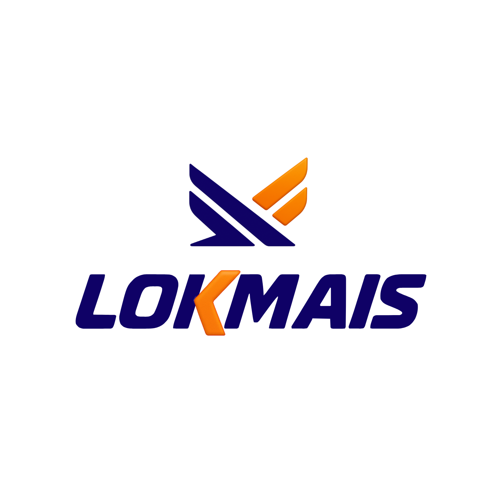

O raciocínio
Resumo das premissas que assumi a partir dos materiais (apresentação, tabela de planos e logo). Me corrija no que estiver errado antes de eu seguir para as páginas.
Locação de motos (Honda Start 160, Fan 2024–2026) com planos semanais. Público: pessoas que querem uma moto para o dia a dia e liberdade de ir e vir.
A asa do logo e o itálico do wordmark pedem energia. Uso tipografia condensada inclinada, cortes diagonais e "speed lines". Nada corporativo-engessado.
Todo bloco termina com uma chamada para ação. Botão verde de WhatsApp fixo na tela e CTAs laranja por toda a navegação.
Os sistemas de design anexados não batem com moto-rental. Construí tudo a partir do logo real da LokMais: marinho profundo + laranja.
Uso blocos/áreas elegantes marcados como "FOTO" até você enviar imagens reais ou aprovar fotos genéricas de moto/entrega.
Paleta
Marinho como base sólida e confiável; laranja como energia e ação. Neutros frios para respiro.
Azul-marinho
Laranja
Neutros
Tipos
Saira Condensed (display, itálico, caixa-alta) carrega a energia. Saira para títulos de UI. Barlow para texto corrido.
Uso do logo

Versão principal sobre fundo claro.

LOKMAISSobre fundo escuro: ícone + wordmark em branco.
Ícone isolado (favicon, avatar, selo).
Botões
Cantos pílula (999px). Laranja = ação principal · verde = WhatsApp · marinho/branco = secundário · ghost = sobre escuro.
Blocos-chave
Semanal, sem entrada complicada. Caução única de R$800.
Placeholder de foto = hachura diagonal rotulada. Trocaremos por imagens reais quando você enviar.
Movimento & ritmo
Seções e cartões com recorte inclinado (clip-path) sugerindo velocidade.
Linhas horizontais em laranja desaparecendo, atrás de números e títulos.
Fade-up de 26px em 600ms ao rolar. Hover sobe 2px. Sem exageros.
Títulos inclinados para a direita, sempre "indo pra frente".
Aprovado? O próximo passo é a Home em 2–3 variações, depois as demais páginas em sequência.